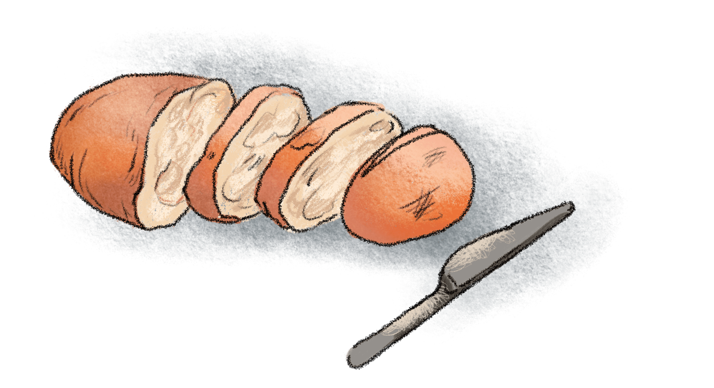

If the subject on which you are writing is of slight extent, or if you intend to treat it very briefly, there may be no need of subdividing it into topics. Thus a brief description, a brief summary of a literary work, a brief account of a single incident, a narrative merely outlining an action, the setting forth of a single idea, any one of these is best written in a single paragraph. After the paragraph has been written, it should be examined to see whether subdivision will not improve it.

Ordinarily, however, a subject requires subdivision into topics, each of which should be made the subject of a paragraph. The object of treating each topic in a paragraph by itself is, of course, to aid the reader. The beginning of each paragraph is a signal to him that a new step in the development of the subject has been reached.
The extent of subdivision will vary with the length of the composition. For example, a short notice of a book or poem might consist of a single paragraph. One slightly longer might consist of two paragraphs:
A. Account of the work.
B. Critical discussion.
A report on a poem, written for a class in literature, might consist of seven paragraphs:
A. Facts of composition and publication.
B. Kind of poem; metrical form.
C. Subject.
D. Treatment of subject.
E. For what chiefly remarkable.
F. Wherin characteristic of the writer.
G. Relationship to other works.
The contents of paragraphs C and D would vary with the poem. Usually, paragraph C would indicate the actual or imagined circumstances of the poem (the situation), if these call for explanation, and would then state the subjeect and outline its development. If the poem is a narrative in the third person throughout, paragraph C need contain no more than a concise summary of the action. Paragraph D would indicate the leading ideas and show how they are made prominent, or would indicate what points in the narrative are chiefly emphasized.
A novel might be discussed under the heads:
A. Setting.
B. Plot.
C. Characters.
D. Purpose.
A historical event might be discussed under the heads:
A. What led up to the event.
B. Account of the event.
C. What the event led up to.
In treating either of these last two subjects, the writer would probably find it neccessary to subdivide one or more of the topics here given.
As a rule, single sentences should not be written or printed as paragraphs
In dialogue, each speech, even if only a single word, is a paragraph by itself: that is, a new paragraph begins with each change of speaker. The application of this rule, when diaglogue and narrative are combined, is best learned from examples in well-printed works of fiction.